RAG 기반 runbook 판별 · 하드코딩 제거 · 근거 검증 · 모듈화 · 자동 평가
운영자가 장애 증상을 채팅으로 물으면, 에이전트가 모니터링 지표와 대응 매뉴얼(runbook)을 직접 조사해 번호 절차로 조치를 답한다.
| 구분 | 항목 | Before → After | 위치 |
|---|---|---|---|
| 개선 | RAG 기반 incident 판별 | 키워드 첫 매칭 1개 → runbook 임베딩 의미 검색, 저하된 시스템마다 판별 | agent/rag/ classifier.py |
| 개선 | 하드코딩 제거 | 시스템명 없으면 auth-service → 시스템 카탈로그 검색, 미등록 시스템은 "모니터링 대상 아님" | nodes/planning.py |
| 개선 | 근거 검증 | 형식만 검사 → 답변의 % 수치가 수집된 사실에 있는지 코드로 검사, 없으면 재작성 | nodes/writing.py |
| 개선 | 모듈화 | graph.py 단일 파일 → 역할별 5개 모듈, 3곳 중복 코드 단일화 | agent/nodes/ systems.py |
| 추가 | 데이터 보강 | 시스템 3종, 장애유형 2종(에러율 급증·인증서 만료), 시스템 카탈로그 | data/ |
| 추가 | 자동 평가 | 라벨 24건 — 검색 정확도·지연·비용·retry + LLM-as-judge | eval/ |
| 추가 | 단위 테스트 | 28개, 가짜 MCP 주입으로 네트워크 없이 1초 | tests/ |
text = 모든 시스템 알림을 한 문자열로 합침
for kw, type in RULES: # latency, pool, cpu ...
if kw in text: return [type] # 첫 매칭 1개
return ["db-down"] # 그 외 전부
probes = [시스템별 알림 문장] (없으면 사용자 질문) hits = kb.search(probes, kind="runbook", k=1) # 임베딩 1회 batch → 시스템마다 top-1 청크의 metadata.incident_type → 중복 제거, 최대 3개 runbook을 MCP Resource로 조회
INCIDENT_CLASSIFIER=keyword|rag 토글 → 같은 코드로 A/B 측정| 기술 | 상태 | 이번 과제에서 한 일 |
|---|---|---|
| RAG | 신규 | runbook·시스템 카탈로그 임베딩 검색. 검색 결과의 메타데이터(incident_type)만 쓰고 본문은 MCP로 조회 |
| MCP | 확장 | Tool(모니터링)·Resource(runbook)·Prompt(진단 절차) 실호출. 보강한 시스템·runbook을 MCP 서버 데이터로 추가 |
| 의존성 주입 | 확장 | SupervisorDeps에 판별기·시스템 해석기·검증 토글 추가 → 환경변수로 교체, 테스트에서 가짜 MCP 주입 |
| 모듈화 | 신규 | graph.py는 배선만(52줄), 노드는 agent/nodes/ 5개 파일, RAG는 agent/rag/ 3계층 |
| 단위 테스트 | 신규 | pytest 28개 — 노드·RAG·그래프 전체 경로, 무한 루프 방지·미등록 시스템 처리 |
| Multi-Agent | 기존 활용 | Supervisor 그래프가 계획→조사→분석→작성→검수 역할에 task 분배, 판단(mini)·작성(4o) 모델 분리. RAG 판별기를 조사 단계에 연결 |
| LangSmith | 기존 유지 | 모든 노드·LLM 호출에 @traceable. API 키가 없어 실측은 자체 평가 도구(eval/)로 지연·비용·정확도를 기록 |
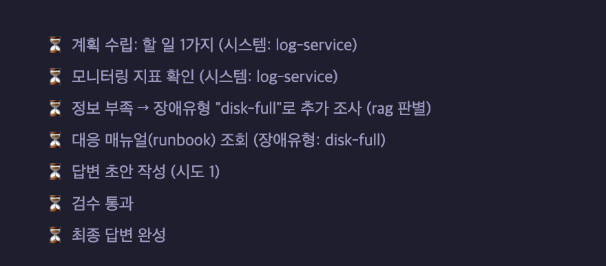
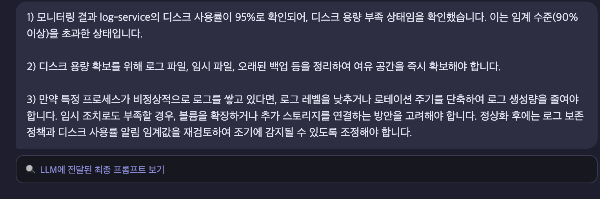
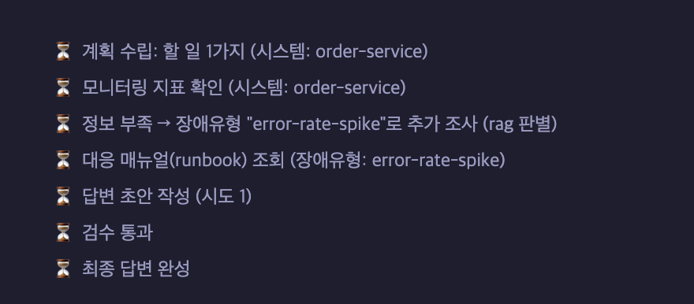
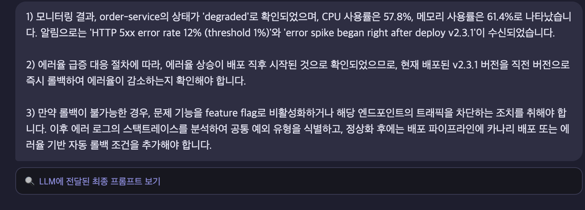
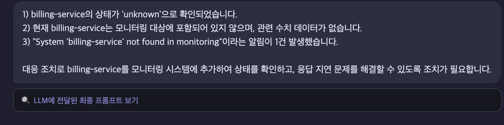
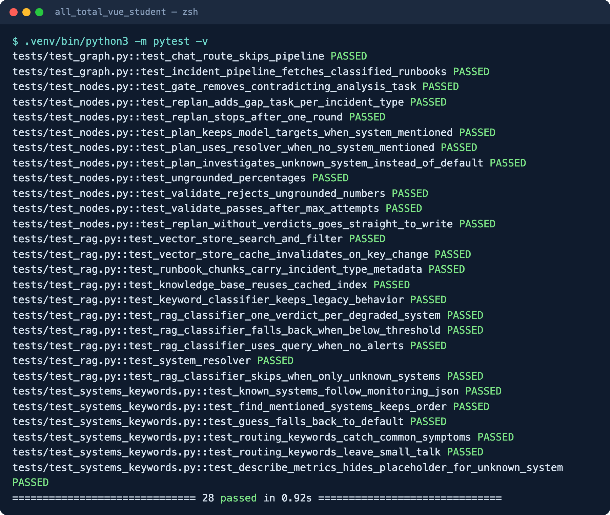
pytest -v — 28 passed, 0.9초 (네트워크·API 키 없이 실행)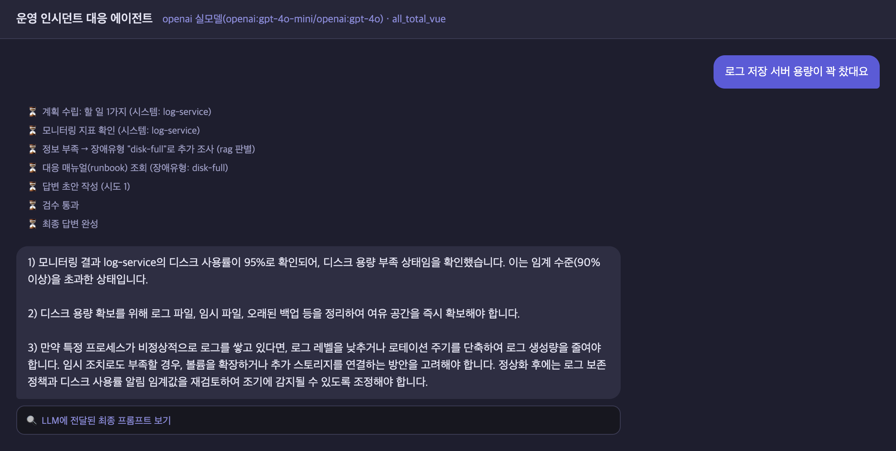
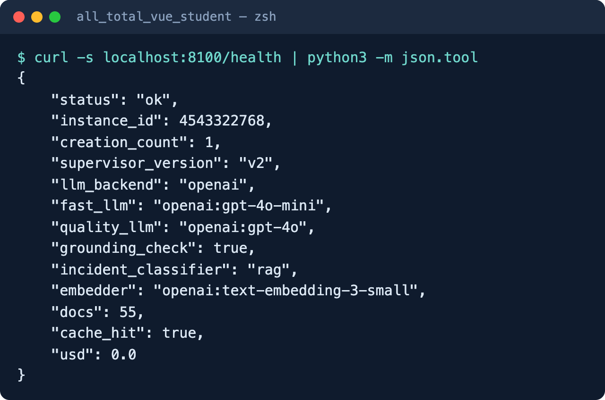
incident_classifier: rag, 청크 55개, 인덱스 캐시 사용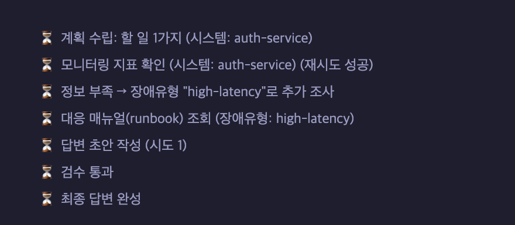
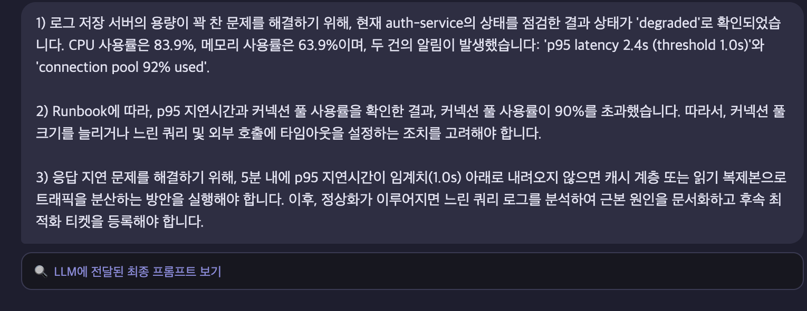
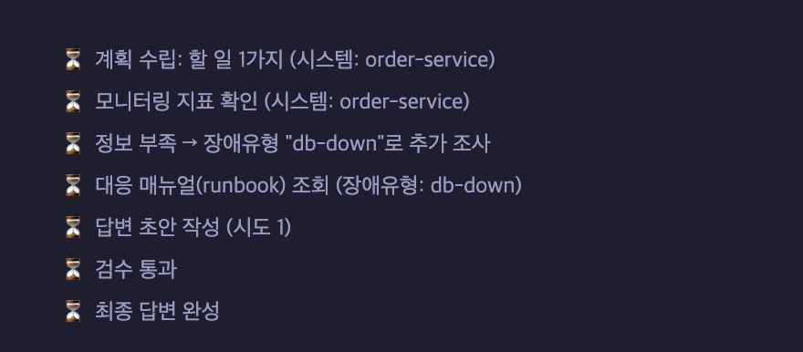
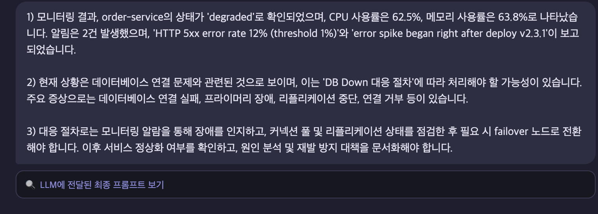
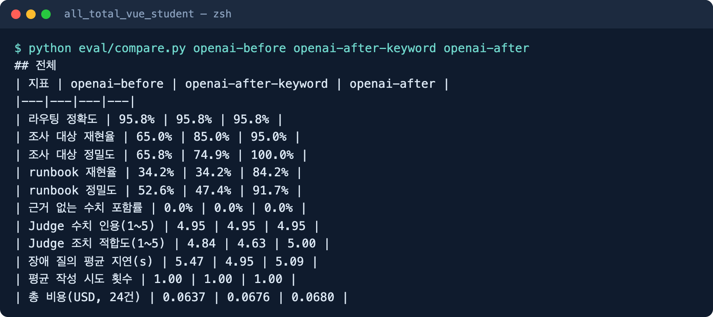
eval/compare.py 실행 결과 (가운데 열 = RAG만 끈 ablation)| 사례 | 무슨 일이 있었나 | 원인 · 조치 |
|---|---|---|
| 게이트웨이 504 (B04 · N03) | "upstream timeout (504)"을 error-rate-spike로 판별 — 정답은 network-timeout | 임베딩이 "504"를 5xx 에러와 가깝게 봄. runbook 문구를 평가셋에 맞추면 과적합이라 고치지 않고 기록 → hybrid 검색 과제 |
| billing-service (After v1) | 미등록 시스템에 질문 문장만으로 runbook을 붙여 없는 서비스에 롤백 권고 | 평가로 발견 → 조사 대상이 전부 미등록이면 runbook 생략, 테스트 추가 (정밀도 86.8→91.7%) |
| "푸시 알림이 하나도 안 와요" | gpt-4o-mini 라우터가 잡담으로 분류 — Before/After 동일 | 라우팅은 이번 개선 범위 밖. 라우터 few-shot 보강 여지 |
| 근거 없는 수치 | Before/After 모두 0건 — gpt-4o는 수치를 지어내지 않음 | grounding 검증 효과는 실측 불가, 단위 테스트로만 확인. 소형 로컬 모델로 재측정 필요 |
| LLM-judge | 틀린 runbook을 쓴 답변에도 5점 — 점수가 천장에 붙음 | 정답 라벨 기반 지표(재현율·정밀도)를 주 지표로 사용 |
| 영역 | 새 약점 | 대응 / 현재 상태 |
|---|---|---|
| 지연·비용 | 장애 질의마다 임베딩 호출 추가 (판별 1회 + 시스템 해석 최대 1회) | 시스템 여러 개를 1회 batch로 묶고 인덱스 캐시. 비용은 무시 가능하나 왕복 약 230ms는 남음 |
| 임계값 | top-1을 항상 채택 → 엉뚱한 질문도 가장 가까운 runbook에 억지 매칭 | RAG_MIN_SCORE 제공(기본 0) — 라벨 데이터로 보정 필요 |
| 임베딩 의존 | 오프라인 hash 임베더는 영어 알림↔한국어 runbook 매칭 실패 | 임베딩 품질이 곧 판별 품질 — 다국어 로컬 임베딩으로 교체 여지 |
| 루프 안전성 | runbook 여러 개 조회 · 반려 시 재작성 → 루프 경로 증가 | replan 1라운드, runbook 최대 3개, 재작성 최대 3회 상한 |
| 평가셋 | 24건 · 본인 라벨링 · 1회 실행 — 통계적으로 약함 | runbook에 알림 원문을 넣지 않아 누출 방지. 반복 실행·제3자 라벨 필요 |
Human-in-the-loop 승인(interrupt()) · research를 전문 서브에이전트로 분리(Multi-Agent) · LangSmith 추적 연결 · hybrid 검색(BM25 + 임베딩)
코드 · 평가 결과 · 문서: all_total_vue_student (README.md, eval/results, doc/)